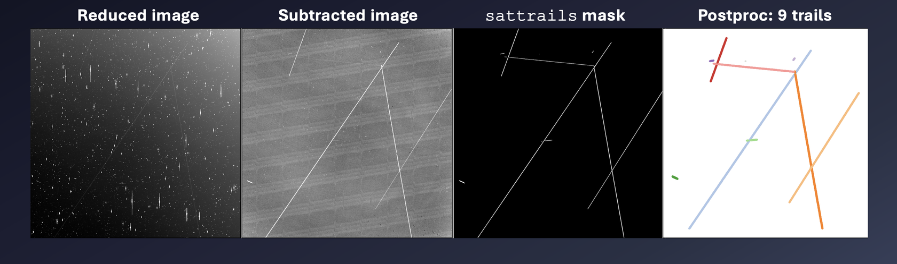
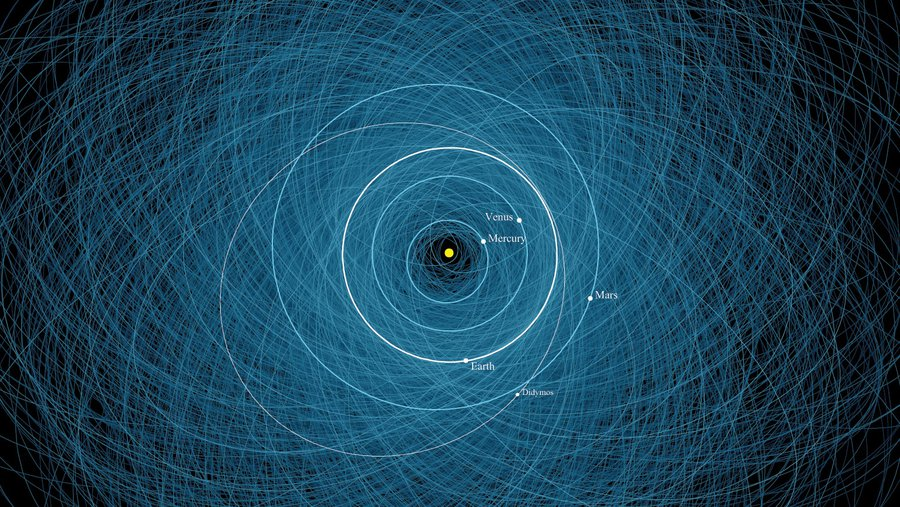
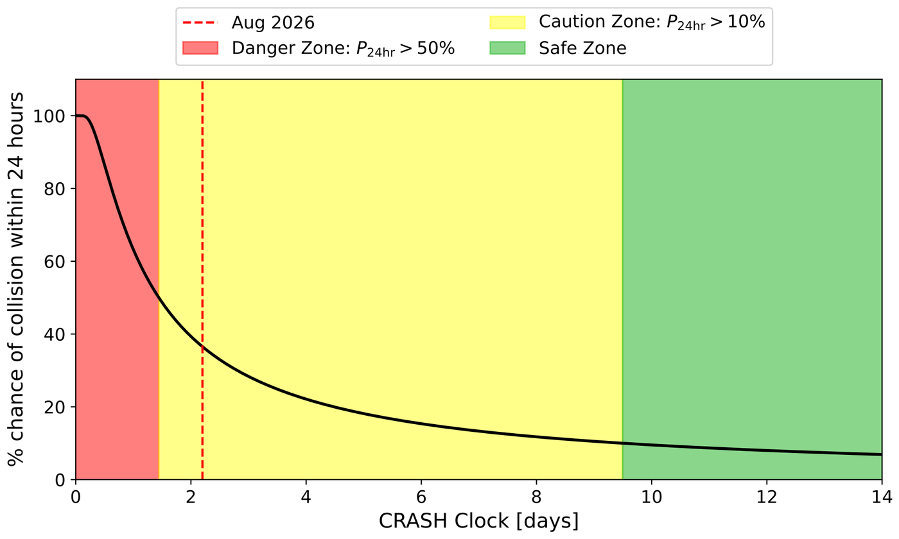
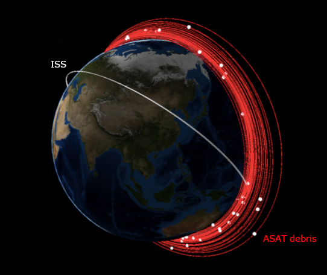
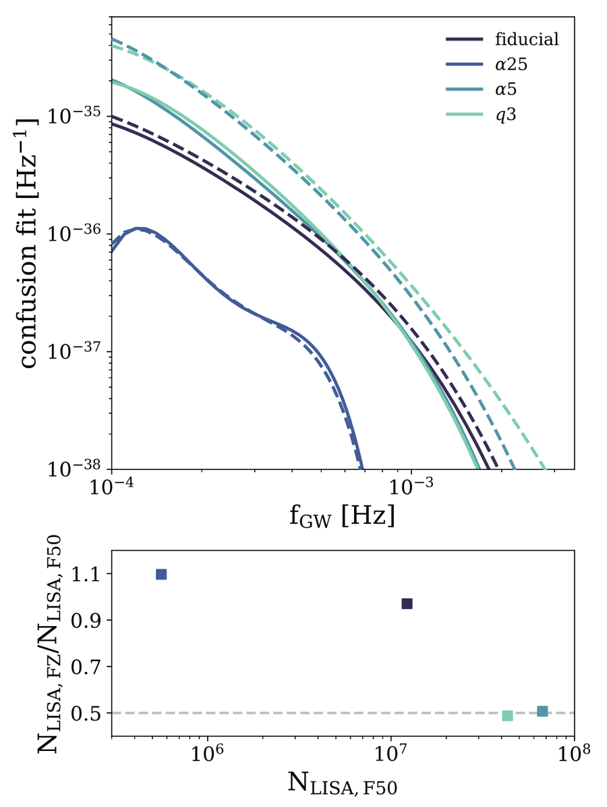
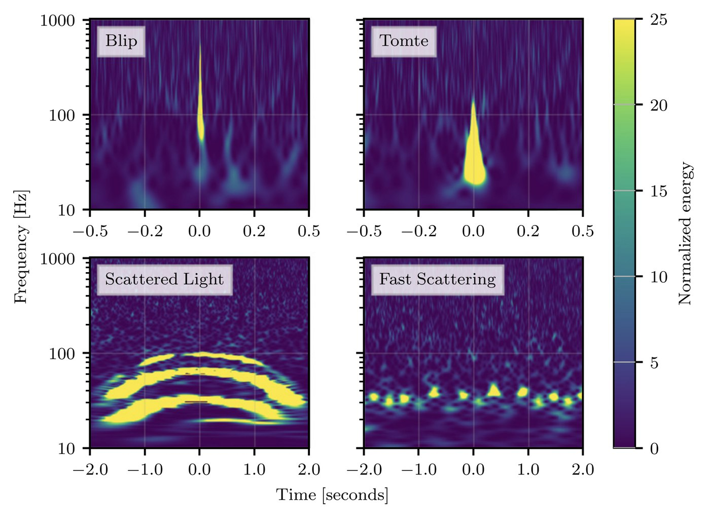

Research
Current
Satellite Trail Detection & Characterization in the HATPI Survey
Wide-field telescopes like HATPI are increasingly affected by satellite trails crossing their images. I developed and maintain a pipeline for detecting, measuring, and identifying these trails in HATPI data from Las Campanas Observatory. The pipeline combines a neural network with a post-processing scheme and photometry measurements to empirically study trends in the numbers and brightness of satellite trails over time.
This work feeds directly into the broader question of how the proliferation of satellite constellations is changing the observational landscape for ground-based astronomy, and allows us to mitigate their effects on our science.

Fast-Moving Near-Earth Objects in the HATPI Survey

With HATPI's high-cadence coverage of the entire visible southern sky, we can detect and characterize fast-moving small asteroids. These NEOs pass close enough to Earth that they move across the sky too quickly for many other surveys to catch. However, the streaks left by artificial satellites in HATPI images can mimic and obscure them.
This phase of my thesis aims to distinguish true near Earth objects from satellite contamination, discover new NEOs, and derive physical and orbital properties for objects that currently have few or no such measurements. By optimizing for small, bright asteroids within a few lunar distances of Earth, we will also complement the fainter and more distant population that LSST is now discovering.
The CRASH Clock

We introduce the Collision Realization And Significant Harm (CRASH) Clock, a metric that quantifies stress on the orbital environment by measuring how long, absent satellite maneuvers, until a catastrophic collision might occur. As of June 2025 the clock stood at 5.5 days and continues to fall — down from 164 days in 2018.
The CRASH Clock is maintained by the Outer Space Institute and has been introduced to the United Nations Committee on the Peaceful Uses of Outer Space (COPUOS).
Past Research
Space Weapon Debris + Satellite Constellations

We modelled the debris clouds generated by kinetic anti-satellite (ASAT) tests (counterspace demonstrations that destroy satellites in Low Earth Orbit). Integrating the lifetimes of ASAT debris fragments against future LEO environments densely populated by satellite constellations, we find a potentially significant likelihood of debris fragments striking operational satellites.
The analysis code, JunkySpace, is available on GitHub. The paper was originally presented at the 2021 AMOS Conference and subsequently invited for submission and published in the Journal of the Astronautical Sciences.
Gravitational Wave Astrophysics
Stellar Metallicity and the LISA-Observable Double White Dwarf Population

The binary fraction of solar-type stars in the Milky Way is anti-correlated with stellar metallicity. I investigated the impact of this metallicity-dependent binary fraction on the Galactic population of double white dwarf (DWD) binaries, simulating Milky Way-like galaxies and computing their gravitational wave signals as future sources for the space-based detector LISA.
Depending on the binary evolution model, the LISA-observable Galactic DWD population may be reduced by more than half when accounting for this effect.
LIGO Detector Characterization
Transient noise artifacts ("glitches") can mimic or mask real astrophysical signals. I contributed to detector characterization efforts within the LIGO Scientific Collaboration on identifying, modeling and classifying these glitches, helping us to distinguish true gravitational wave signals from instrumental noise.
This includes my undergrad honors thesis, "Investigating uniqueness of transient noise in gravitational wave data using the Temporal Outlier Factor", as well as safety studies on the CNN-based classifier Gravity Spy and other glitch morphology studies. See a few works below that I was a contributing author on.
